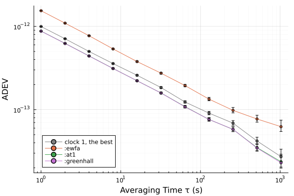

Clock ensembles
A time scale is a clock on paper: at each instant a weighted average of several clocks, kept as the offset of each clock from the average. It can be more stable than its best clock, and it goes on when a clock stops. timescale forms one, by any of six algorithms, from clocks that are read against a common reference.
Comparisons
The clocks are read against one reference at the same instants, by a counter with a channel for each clock or by a switch that steps through them. ClockComparisons holds the readings, one column for each clock. simulate_ensemble draws such a set from a ClockModel for each clock and returns the true states with it, so that a scale can be held against true time.
using SigmaTau, Random
# white FM of 1, 2 and 4 × 10⁻¹² at 1 s, each clock with random-walk FM
ms = [ClockModel(; tau0 = 1.0, q1 = q, q2 = 1e-6q) for q in (1e-24, 4e-24, 1.6e-23)]
cc, truth = simulate_ensemble(ms, 20_000; reference = 0, rng = Xoshiro(1))
ccClockComparisons: 3 clocks × 20000 samples at τ₀ = 1.0 s, against ideal reference
clock 1, clock 2, clock 3cc[i] is the record of clock $i$ against the reference, and cc[i, j] that of clock $i$ against clock $j$, in which the reference cancels. With reference = 0 the reference is perfect, which a simulation can have and a laboratory cannot.
SigmaTau.ClockComparisons — Type
ClockComparisons(x::AbstractMatrix, tau0; names, reference="")
ClockComparisons(records::AbstractVector{<:PhaseData}; names, reference="")Phase readings of several clocks against one reference, taken at the same instants: the input of timescale.
Column $i$ of x is clock $i$ minus the reference, in seconds, with one row per sample and NaN where a reading is missing. The reference may be one of the clocks, as with a switch or a counter that measures each against clock 1, whose column is then zero, or an outside one. cc[i] is the record of clock $i$ as PhaseData, and cc[i, j] the difference clock $i$ − clock $j$, in which the reference cancels.
Arguments
x: the readings, samples by clocks, for two or more clocks.tau0: sample interval in seconds.records: one phase record per clock, all of one length and onetau0.
Keywords
names: one name per clock, all different;"clock 1","clock 2", … by default.reference: what the clocks were read against, for display.
Fields
x::Matrix{Float64}: Phase of each clock against the reference (s), one column per clock.tau0::Float64: Sample interval τ₀ in seconds.names::Vector{String}: Clock names, one per column.reference::String: What the clocks were read against.
Examples
julia> using SigmaTau
julia> x = [0.0 1e-9; 0.0 3e-9; 0.0 4e-9]; # clock 2 read against clock 1
julia> cc = ClockComparisons(x, 1.0; reference = "clock 1")
ClockComparisons: 2 clocks × 3 samples at τ₀ = 1.0 s, against clock 1
clock 1, clock 2
julia> cc[2, 1].x == x[:, 2]
trueSigmaTau.simulate_ensemble — Function
simulate_ensemble(models::AbstractVector{ClockModel}, N; reference=1, rng=nothing)
→ (ClockComparisons, Array{Float64,3})N samples of an ensemble in which clock $i$ follows models[i], with the true states behind the readings.
Each clock is drawn as by simulate_clock and read against clock reference, whose own column is zero, or against a perfect outside reference with reference = 0. A reading carries the white PM and the flicker PM of its own clock's model.
Arguments
models: oneClockModelper clock, two or more, with onetau0.N: number of samples.
Keywords
reference: index of the clock the others are read against, or0.rng: a random number generator, such asXoshiro(1), for a reproducible ensemble.
Returns
The comparisons, and the true states truth[k, s, i] of clock $i$ at sample $k$ against true time: phase ($s = 1$), frequency (2) and, for a model with drift, drift (3). The frequency includes the Markov states of a model with flicker FM.
Examples
using SigmaTau, Random
ms = [ClockModel(; tau0 = 1.0, q1 = q, q2 = 1e-6q) for q in (1e-24, 4e-24, 1.6e-23)]
cc, truth = simulate_ensemble(ms, 20_000; reference = 0, rng = Xoshiro(1))
adev(cc[2, 1]) # clock 2 − clock 1, whatever the referenceSigmaTau.clock_models — Function
clock_models(cc::ClockComparisons; alphas=[2, 1, 0, -2], flicker=false)
→ Vector{ClockModel}One ClockModel per clock, fitted from the comparisons alone, for the Kalman time scales of timescale.
Each clock's Allan deviation is separated from the others' by the Groslambert covariance of the clock differences (groslambert), in which the reference cancels. powerlaw_fit fits the components alphas to that curve, and clock_model turns the fit into a model. This takes three or more clocks.
The default components are white PM, flicker PM, white FM and random-walk FM, and the flicker PM is folded into R. Flicker PM needs its own term in the fit: without one it passes for white FM and inflates q1. With flicker = true, flicker FM joins the fit and each model keeps its flicker FM and flicker PM as Markov states. At the longest τ of a short record the levels are poorly separated, so compare each model with its curve. A clock whose curve leaves the fit too few positive points throws an error.
The comparisons may have missing readings (NaN): the covariance leaves out the terms that read one. The curves are computed at the octaves of the interval between the readings of each clock, so clocks read at every tenth sample are fitted from the multiples of ten. With three clocks, a clock enters every curve, and the samples at which one of them is unread count for none.
Arguments
cc: the comparisons, of three or more clocks.
Keywords
alphas: exponents $α$ of the components fitted.flicker: fit flicker FM as well and keep both flickers as Markov states.
Examples
using SigmaTau, Random
ms = [ClockModel(; tau0 = 1.0, q1 = q, q2 = 1e-6q) for q in (1e-24, 4e-24, 1.6e-23)]
cc, _ = simulate_ensemble(ms, 20_000; reference = 0, rng = Xoshiro(1))
fitted = clock_models(cc)
[m.q1 for m in fitted] # near 1e-24, 4e-24, 1.6e-23Time scales
timescale returns the phase and the frequency of each clock against the scale, and its weight, at every sample. Three algorithms average the predictions of the clocks and learn what they need from the comparisons:
:ewfagives every clock the same weight (Kettering (2023), §3.1).:at1, the NIST algorithm, weighs each clock by the inverse of its mean squared prediction error (Weiss and Weissert (1991), Eqs. (1)–(10)).:at2adds a variance to each frequency estimate of AT1, and with it a test for frequency steps (Eqs. (11)–(22) of the same paper).
Three run a Kalman filter on a ClockModel of each clock:
:greenhallreduces the covariance of the filter after each update, which gives the scale the weights that make its steps smallest (Greenhall (2003); Greenhall (2006)).:jones_tryonis the same filter without the reduction (Jones and Tryon (1983)).:steinfilters the difference of each clock from a pivot clock, with one set of weights each for phase, frequency and aging (Stein (2003)).
The docstring of timescale has the equations of each.
r = timescale(cc; algorithm = :at1)AT1 timescale from 3 clocks, 20000 samples
final weights 0.711, 0.232, 0.057AT1 learns its weights from the record. The reduced Kalman scale takes them from the models, here the true ones, as the inverse of the white FM levels:
g = timescale(cc; algorithm = :greenhall, models = ms)
round.(g.weights[end, :]; digits = 3)3-element Vector{Float64}:
0.762
0.19
0.048timescale_phase returns the reference against the scale as a phase record. Against the perfect reference of this simulation that is the error of the scale, and its Allan deviation is that of the scale itself:
using Plots
m = 2 .^ (0:10)
σ(algorithm; kw...) = adev(timescale_phase(timescale(cc; algorithm, kw...)), m)
plot(adev(cc[1], m); label = "clock 1, the best", color = :gray)
plot!(σ(:ewfa); label = ":ewfa")
plot!(σ(:at1); label = ":at1")
plot!(σ(:greenhall; models = ms); label = ":greenhall", legend = :bottomleft)
Equal weights let the noisiest clock set the level, and that scale is less stable than its best clock. The two weighted scales lie on one another here, below every clock.
The scales compared
For independent clocks, no average with fixed weights has a smaller Allan variance at a given $τ$ than $1/\sum_i σ_i^{-2}(τ)$, that of the average weighted by the inverse Allan variances of the clocks at that $τ$. The tables give the Allan deviation of each scale over that bound, in simulation, on clocks without reading noise and with their true models. Each scale is set against that average of the same records, which takes the scatter of the records out of the ratio. The rows of :ewfa, whose weights are equal, and of the best clock follow from the models.
With four clocks whose white FM and random-walk FM levels both rise by a factor of 4 from clock to clock, one set of weights is the best at every $τ$ (400 records of 32 768 samples; the last entry of :at1 is good to 0.02):
| Scale | $τ_0$ | $16τ_0$ | $256τ_0$ | $4096τ_0$ |
|---|---|---|---|---|
:greenhall, :stein, :jones_tryon | 1.00 | 1.00 | 1.00 | 1.00 |
:at1 | 1.00 | 1.00 | 1.00 | 1.00 |
:ewfa | 2.66 | 2.66 | 2.66 | 2.66 |
| best clock | 1.15 | 1.15 | 1.15 | 1.15 |
Greenhall (2006), §7 takes three clocks of white and random-walk FM with $(q_1, q_2)$ = (4, 0.37), (25, 0.031) and (4, 0.37) at $τ_0 = 1$. The second is the noisiest at short $τ$ and the quietest at long $τ$, so the best weights change with $τ$. Without reading noise, as in Greenhall (2007), §3 (400 records of 8192 samples; :at1 and :at2 from $64τ_0$ are good to 0.06):
| Scale | $τ_0$ | $4τ_0$ | $16τ_0$ | $64τ_0$ | $256τ_0$ | $1024τ_0$ |
|---|---|---|---|---|---|---|
:greenhall | 1.01 | 1.07 | 1.08 | 1.08 | 1.01 | 1.00 |
:stein | 1.03 | 1.17 | 1.18 | 1.09 | 1.01 | 1.00 |
:jones_tryon | 3.10 | 2.63 | 1.38 | 1.01 | 1.00 | 1.00 |
:at1 | 1.00 | 1.01 | 1.08 | 1.47 | 1.54 | 1.54 |
:at2 | 1.00 | 1.01 | 1.09 | 1.51 | 1.58 | 1.58 |
:ewfa | 1.39 | 1.24 | 1.01 | 1.51 | 1.77 | 1.79 |
| best clock | 1.47 | 1.50 | 1.60 | 1.12 | 1.08 | 1.08 |
The reduced Kalman scale stays within 10 % of the bound, and the unreduced one is three times above it at $τ_0$ and reaches it from $64τ_0$. The 2007 paper reports both: within 1.09 times the bound for the first, and for the second at the bound from $64τ_0$ and behind the first below $32τ_0$. :at1 and :at2 take their weights from the prediction errors over one interval. They are at the bound at short $τ$ and half above it at long $τ$, where the best clock alone is 30 to 47 % more stable than the scale.
The unreduced filter is the more exposed to the long-term levels of the models. Its scale was within 1 % of :greenhall on the four clocks of one shape, 5 to 12 % less stable on four clocks of white FM alone, and 5.7 times less stable at $τ_0$ on four clocks ordered one way in white FM and the other way in random-walk FM.
Fitted models
The Kalman scales are as good as their models. clock_models fits them from the comparisons of three or more clocks: it separates each clock from the others by the Groslambert covariance (groslambert) and fits a power law to its curve.
fitted = clock_models(cc)
# made with q1 = 1e-24, 4e-24, 1.6e-23 and q2 = 1e-6 q1
[[m.q1 for m in fitted] [m.q2 for m in fitted]]3×2 Matrix{Float64}:
9.93434e-25 5.07873e-29
3.80176e-24 1.51257e-29
1.57504e-23 2.70949e-29The white FM levels come out within 5 %. The random-walk FM of these clocks shows only at the longest $τ$ of 20 000 samples, and its levels do not: the first is 50 times too large here, and over 16 such records the fitted $q_2$ ran from zero to 32 times the truth. :greenhall and :stein on the fitted models were then within 2 % of :greenhall on the true models up to 100 s and a quarter less stable at 1000 s, where :at1, which takes no model, was 2 % behind. :jones_tryon on the fitted models was 1.9 times less stable at every $τ$. With 200 000 samples the fitted $q_2$ lay between a quarter of the truth and 2.4 times it, :greenhall and :stein were within 5 % of the true models up to 10 000 s, :jones_tryon 5 to 10 % behind, and :at1 within 2 % at every $τ$. On clocks like these, whose best weights are the same at every $τ$, a record has to be long enough to show the slow noise of each clock before a Kalman scale matches AT1.
The comparisons may have missing readings: the covariance leaves out the terms that read one, and clocks read at every tenth sample are fitted from the multiples of ten. In simulation (four clocks, 20 000 samples; a clock unread for a tenth of the record, a clock that joins at a third of it, a tenth of all readings missing at random, every clock read at every tenth sample), :greenhall and :stein on the models fitted from such a record were within 2 % of the same scale on the true models up to 100 s and 4 to 17 % less stable at 1000 s, against 7 and 10 % without gaps. :jones_tryon was 1.2 to 1.4 times less stable at every $τ$, against 1.3.
Reading noise and the pivot
With noise on the readings the clocks, each corrected by the filter's estimate of its phase, no longer agree, and the scale is read at one of them, pivot: the reading of that clock less the estimate of its phase. The readout carries the white PM of that reading. In simulation, with three equal clocks of white FM $10^{-12}$ at 1 s read with 10 ps of white PM, the Allan deviation of the readout was 29 times that of the implicit ensemble mean at $τ_0$ and 1.2 times at $1024τ_0$. implicit_mean returns that mean for a simulated ensemble, whose true phases are known. No measurement gives it (Greenhall (2006), §4). The average of the readouts at the three clocks, with the weights of the scale, was 1.67 times quieter than one readout at $τ_0$ and 1.15 times at $1024τ_0$.
Without reading noise every pivot gives the same :greenhall and :jones_tryon scale. :stein runs the filters of one pivot only and depends on it: by less than 0.1 % in Allan deviation on the four clocks of one shape, and by up to 3.7 % on Greenhall's three.
Two clocks
Two clocks give one difference, which cannot say which of them is the better. In simulation with white FM levels of 1 and 4, two clocks read against each other kept equal weights under :at1. Read against a quieter third reference, they took their weights from the start of the record, where each clock is seen alone, and learned nothing after it: the weights held under bias = :exact and relaxed to equal within the memory under bias = :paper.
Frequency-step detection
With steps = :best or :real, :at2 tests each clock for a step in frequency. A clock that fails is taken out of the scale for its $τ_{\min}$, the scale is run again from the step, and the clock goes on being estimated while it is out (Weiss and Weissert (1991), §4). The docstring of timescale gives the test and where it departs from the paper.
In simulation, a step was put on a clock with white FM of $1.4 × 10^{-11}$ at the sample interval, one of four clocks (20 records of 8000 samples, threshold 5):
| Step | Caught | Samples until caught: least, median, most |
|---|---|---|
| $1 × 10^{-10}$ | 20 of 20 | 1, 1, 2 |
| $5 × 10^{-11}$ | 20 of 20 | 3, 6, 11 |
| $2 × 10^{-11}$ | 18 of 20 | 25, 40.5, 77 |
| $1 × 10^{-11}$ | 6 of 20 | 63, 159, 257 |
A step several times the white FM of the clock is caught at once, and one of its size after tens of samples or not at all. On the same ensemble without a step, a threshold of 4 took a clock out 15 times in 24 records and raised the Allan deviation of the scale at $τ_0$ by 1 % in the median and 4 % at most. Thresholds of 5 and 6 took none out. The paper tests at 4.
What the test buys shows on five equal clocks of white and random-walk FM, with a $τ_{\min}$ of 40 samples and a step on one clock (20 records). Steps of 3 and 10 times the white FM of the clock were caught, and the clock came back after one $τ_{\min}$ with 0.97 to 0.98 of the step in its frequency estimate. Larger steps took two: the first reading after a large step raises the prediction error of the clock, the filter then trusts its readings less, and at its first return the clock had learned 0.45 of a step of 30 times its white FM and 0.05 of a step of 100 times. It came back with a weight of 0.001 or less, was caught again, and held 0.98 of the step at its second return. At a return the scale stepped by 0.4 to 1.3 times its usual step. Two hundred samples after the step, the scale had lost 44 to 56 ns to it, against 830 to 1680 ns with the same steps left in.
Clocks that drop out and return
A NaN in the comparisons is a missing reading. A clock without a reading keeps its prediction and takes no part in the scale at that sample, and no scale steps when a clock drops out. Over the gap the prediction of the clock gathers an error, which every scale but one keeps out when the readings return:
- In
:ewfa,:at1,:at2and:steinthe clock joins again as a new clock does. Its phase is taken from the scale at the sample of its return, and it weighs in from the next. The sources give no procedure for a clock that returns, and this one is the package's own. :greenhallgives a clock no weight in its mean while it is unread, the procedure of Greenhall (2006), §10.:jones_tryonhas no such rule. Its filter leaves a missing difference out of the measurement (Jones and Tryon (1983), §2), and the scale takes a share of the error when the clock returns.
In simulation, three clocks with white FM of 1, 2 and $4 × 10^{-12}$ at 1 s ran at frequency offsets of 0, $1 × 10^{-12}$ and $-2 × 10^{-12}$, and one of them went unread for $g$ samples. The table gives the step of the scale at the return over its RMS step, in the median of 500 records, which is good to 10 %. For an ordinary step that ratio is 0.67.
| Scale, and the clock unread | $g = 10$ | $g = 100$ | $g = 2000$ |
|---|---|---|---|
all but :jones_tryon, the noisiest clock | 0.7 to 0.8 | 0.7 to 0.8 | 0.7 to 0.8 |
all but :jones_tryon, the best clock | 1.0 to 1.4 | 1.1 to 1.5 | 1.0 to 1.3 |
:jones_tryon, the noisiest clock | 0.8 | 1.5 | 8.4 |
:jones_tryon, the best clock | 3.1 | 12 | 61 |
:stein, its pivot | 2.7 | 8.0 | 41 |
At the sample of a return the scale is carried by the other clocks, and its step is theirs: larger than usual when the best clock is the one that returns, and no larger for a longer gap. :jones_tryon steps with the length of the gap, and by more for a better clock.
A clock whose first reading comes after the start is measured against the scale. In :ewfa, :at1 and :at2 its starting frequency is its slope over its first tenth of the record less the slope of the scale over the same samples. In :greenhall and :jones_tryon it begins as the clock of most weight read with it plus a line through its first 16 readings against that clock, with a wide covariance. The reference of the readings cancels in both, and the scale takes an ordinary step at the join. The sources give no procedure (Greenhall (2003), §5 names the insertion of a new clock as a practical difficulty of a Kalman scale), and these are the package's own. In simulation, with three clocks whose white FM variances were as 1 : 4 : 16 and one of them first read at sample 1001 of 8192, the rate of the :ewfa, :greenhall and :jones_tryon scales changed at the join by what the noise of the clocks gives. That of :at1 and :at2 changed by 1.3 times as much when the best clock was the late one: the error of its frequency, measured over 819 samples, times its weight of 0.74. :stein measures the late clock against its pivot over the clock's first tenth of the record, with the noise of the pivot in the measure. When the best clock was the late one its rate changed by 1.2 times as much with the middle clock as pivot and by 2.4 times with the noisiest: give :stein the quietest clock that is read from the start as its pivot.
:stein measures every clock against its pivot. While the pivot is unread no difference is measured, every clock runs on its prediction, and the scale steps when the pivot returns. A :stein scale needs a pivot that is read throughout.
:ewfa keeps its phase through a gap and not its rate. It carries each clock on its last frequency step alone, so when a clock drops out the frequency of the scale shifts by the noise of that one step, and stays there until the clock returns. With the noisiest clock unread for 2000 samples, the mean frequency of :ewfa over the gap differed from that of the 2000 samples before it by 37 times as much as in the same records without the gap. For the other scales the factor was 1.0 to 1.2.
The clocks need not be read at every sample of the record. In :ewfa, :at1 and :at2 the interval of the equations is the time since the last sample with a reading (Weiss and Weissert (1991), §2.8), so clocks read together at every tenth sample give the scale of those readings alone. They do have to be read together: a clock read less often than the others joins anew at each of its readings and never has a weight. For clocks on different schedules, form the scale on the samples they share: the Kalman scales take each reading when it comes, but then lean on the clock read most often.
SigmaTau.timescale — Function
timescale(cc::ClockComparisons; algorithm=:at1, models=nothing, pivot=1,
tau_min=nothing, memory=1.728e6, bias=:paper, wmax=1.0,
outlier=Inf, steps=false, step_threshold=5.0, lmax=nothing,
step_inflate=4.0) → TimescaleResultA time scale from the clocks of cc: the phase and frequency of each clock against the scale, and its weight, at every sample.
algorithm | Scale | Weights |
|---|---|---|
:ewfa | equal-weights frequency averaging | equal |
:at1 | NIST AT1 | from the prediction errors |
:at2 | AT1 with a frequency variance | as :at1 |
:greenhall | Kalman filter with covariance reduction | of the implicit ensemble mean |
:jones_tryon | the same filter without the reduction | not reported |
:stein | a Kalman filter for each clock difference | inverse noise variances |
The first three learn what they need from the comparisons. The last three take one ClockModel per clock in models, which clock_models fits from cc. Time scales compares the six in simulation.
Averaging scales
With $x_i$ the phase of clock $i$ against the scale, $y_i$ its frequency and $z_i$ its reading against the reference, each clock predicts its next phase, and the scale is placed where the weighted prediction errors sum to zero (Weiss and Weissert (1991), Eqs. (1)–(2), without the drift term of Eq. (1)):
\[\hat{x}_i = x_i(t) + y_i(t)\,τ, \qquad x_i(t + τ) = z_i(t + τ) + \sum_j w_j \bigl[\hat{x}_j - z_j(t + τ)\bigr] .\]
A clock without a reading keeps its prediction and takes no part in the sum. A clock joins at its first reading, and again at the first reading after a gap: its phase is then taken from the scale, and it takes part in the sum from the next sample, so the scale does not step when a clock returns. Where every clock read at a sample returns from a gap, they all take part. The sources give no procedure for a clock that returns, and this one is the package's own. Weiss and Weissert (1991), §1 name the aim: clocks are added to AT1 and removed from it with minimal impact on the scale.
In these three scales the interval $τ$ of the equations is the time since the last sample with a reading, as a clock's frequency comes from its latest two readings (Weiss and Weissert (1991), §2.8): clocks read together at every tenth sample give the scale of those readings alone, and the constants below are taken at that spacing. The clocks have to be read at the same samples; one read less often than the others joins anew at each of its readings and never has a weight.
The scale starts at the mean of the first readings. Each clock starts from its own first readings, as many samples as a tenth of the record's readings. The frequency of a clock read at the first sample starts at the slope of a line through them, less the mean slope of those clocks under their starting weights. A clock that joins later starts at its slope less that of the scale over the same samples, which is the weighted mean of the other clocks' slopes less their frequencies against the scale, so the reference of the readings cancels. The rate of the scale then changes by the error of that frequency times the weight of the clock.
:ewfa gives every clock the same weight and takes $y_i$ as the clock's last frequency step, $[x_i(t) - x_i(t - τ)]/τ$ (Kettering (2023), §3.1). With every clock read at every sample the scale is the mean of the clocks' phases. The thesis does not treat missing readings. Under the rule above the scale keeps its phase when a clock drops out, and its frequency shifts by the noise of one frequency step until the clock returns.
:at1 is the NIST scale as Weiss and Weissert (1991), Eqs. (3)–(10) give it. The weights are the inverse variances of the prediction errors,
\[w_i = \frac{ε_x^2}{ε_i^2}, \qquad ε_x^2 = \Bigl(\sum_i ε_i^{-2}\Bigr)^{-1} ,\]
where $ε_i^2$ is an exponential average, of time constant memory, of the square of
\[\hat{ε}_i = |\hat{x}_i - x_i| + K_i, \qquad K_i = \frac{2 ε_x^2}{\sqrt{2π ε_i^2}} .\]
$K_i$ makes up for the clock being part of the scale it is compared with. $ε_i^2$ starts at $τ^2 σ_{y,i}^2(τ)$ (§2.7 of the paper), estimated from those first readings of the clock, so a clock that joins late has its weight at once. The estimate is an N-cornered hat over the clocks and the reference (Gray and Allan (1974); SP1065 §10.14), so that the noise of the reference and of the other clocks stays out of it; each pair has the weight of the inverse variance of its sum, which is the package's own. The frequency is an exponential average of the frequency steps,
\[y_i(t + τ) = \frac{1}{m_i + 1} \Bigl[\frac{x_i(t + τ) - x_i(t)}{τ} + m_i\,y_i(t)\Bigr], \qquad m_i = \frac{1}{2} \Bigl[\Bigl(\frac{1}{3} + \frac{4 τ_{\min,i}^2}{3 τ^2}\Bigr)^{1/2} - 1\Bigr] ,\]
with $τ_{\min,i}$ the averaging time at which the Allan deviation of the clock is smallest.
:at2 keeps the weights of AT1 and estimates each frequency with a Kalman filter on the frequency steps $\bar{y}_i$ (Weiss and Weissert (1991), Eqs. (11)–(18)). The white FM of a step has the variance $σ_α^2 = ε_i^2/τ^2$, and the random walk of the frequency gains $σ_β^2 τ$ per interval:
\[\hat{P} = P + σ_β^2 τ, \qquad y_i \leftarrow \frac{σ_α^2\,y_i + \hat{P}\,\bar{y}_i}{σ_α^2 + \hat{P}}, \qquad P \leftarrow \frac{σ_α^2\,\hat{P}}{σ_α^2 + \hat{P}} .\]
$σ_β^2 τ$ is fixed for each clock by $m_i(m_i + 1) = σ_α^2/(σ_β^2 τ)$ at the start, where $P$ takes its steady state. As $σ_α^2$ follows $ε_i^2$, the memory of the filter adapts to the clock; in steady state it is the filter of AT1.
Frequency steps
With steps = :best or :real, :at2 looks for a step in the frequency of each clock after every sample, after Weiss and Weissert (1991), §4. For windows of $s = 2$ to lmax − 1 intervals that end at the current sample, the mean frequency of the clock over the window is compared with its estimate $y_i$ at the start of the window. The variance of the difference is taken as
\[P_{-s} + \frac{σ_{α,i}^2 + σ_{αx}^2}{s} + \bigl(σ_{β,i}^2 τ + σ_{βx}^2 τ\bigr) \frac{(s + 1)(2s + 1)}{6s} ,\]
the variance of the estimate at the start of the window, the white FM of a mean over $s$ intervals and the random walk of the frequency across them, the last two for the clock and for the scale, whose levels are $σ_{αx}^2 = (\sum_i σ_{α,i}^{-2})^{-1}$ and likewise $σ_{βx}^2$ (Eqs. (21)–(22)). The largest difference beyond step_threshold standard deviations marks a step at the start of its window. No window starts before the sample at which the clock last joined the scale, or returned to it after a step.
The scale is then run again from the step with the weight of that clock at zero and its $P$ raised to $σ_α^2$, and no further step is looked for until the rerun has reached the current sample. The clock stays out for $τ_{\min,i}$. Meanwhile it is still read against the scale and its frequency and $ε_i^2$ go on being estimated, so that it returns with its new frequency, and $ε_i^2$ is multiplied by step_inflate at its return. :best replaces the scale from the step on, which suits a recorded history. :real keeps every value already issued and corrects only what follows, as a scale that runs in real time must.
The test differs from the paper's in four ways. The variance above stands in place of that of Eq. (20). The windows end at the current sample and are at least two intervals long, where the average frequency of Eq. (19) ends one measurement earlier. The default threshold is 5 standard deviations, where the paper takes 4. And the paper gives neither the amount by which $P$ is raised nor that by which $ε_i^2$ is. Frequency-step detection gives the steps caught and the false alarms in simulation.
Kalman scales
:greenhall runs one Kalman filter over the states of all the clocks, with the transition and process noise of each model and the differences of the readings as measurements. After each measurement update the covariance $P$ is reduced in its phase part $P_{xx}$:
\[P \leftarrow S P S^\mathsf{T}, \qquad S = \begin{pmatrix} I - \mathbf{1} a^\mathsf{T} & 0 \\ 0 & I \end{pmatrix}, \qquad a = \frac{P_{xx}^{-1} \mathbf{1}}{\mathbf{1}^\mathsf{T} P_{xx}^{-1} \mathbf{1}}\]
(Greenhall (2006), Eqs. (3.11)–(3.12) and (5.1)). The reduction leaves the frequency estimates as they were, and the weights $a$ are those that minimize the variance of each step of the scale (Greenhall (2003), Theorems 1 and 2; Theorem B.2 of the 2006 paper with noise on the readings). With every R = 0 this is the reduced Kalman scale of the 2003 paper, and with R > 0 the IEMx algorithm of the 2006 paper. The weights returned are $a$, those of the implicit ensemble mean of implicit_mean.
A clock without a reading takes no part in the measurement or in $a$, which is then taken over the clocks read, the procedure of Greenhall (2006), §10. The clock runs on its prediction, and the scale does not step when its readings return.
A clock first read after the start begins as the clock of most weight read with it, plus a line through its first 16 readings against that clock. The covariance of the line is widened, so that the readings to come set the phase and frequency of the clock. The scale does not step there, and the reference of the readings takes no part in the start. The sources give no procedure, and this one is the package's own: Greenhall (2003), §5 names the insertion of a new clock without a phase or frequency step as a practical difficulty of a Kalman scale.
Noise on the readings leaves the corrected clocks $x_i - \hat{x}_i$ unequal and their mean out of reach of a measurement (§4 of the 2006 paper). The scale is therefore read at clock pivot, as the reading of that clock less its estimated phase, and it carries the white PM of that reading. With every R = 0 all pivots give the same scale.
The filter starts each clock read at the first sample from a line through its first 16 readings. An error in those starting frequencies stays in the scale as a constant frequency offset (Greenhall (2007), §2). The drift of a model with drift starts at zero, as in the initialization of Jones and Tryon (1983), Fig. 1, with the variance that a parabola through those readings gives it. The filter observes the differences between the drifts of the clocks and not their common part, so a drift fitted to the first readings would stay in the scale as a constant drift; started at zero, the drift of the scale is a weighted mean of the drifts of the clocks. Models with flicker FM bring their Markov states into the filter, which at R = 0 is the algorithm of Davis et al. (2005), Eqs. (3.1)–(3.6) and (4.1); the frequency returned for a clock includes them. Markov states for flicker PM belong to the readings and stay out of the phases that the scale is formed from. The papers take the noise of a reading as white, so that case is this package's own; see Flicker states.
:jones_tryon is the same filter without the reduction. Its scale is the one that Jones and Tryon (1983), §4 read from their filter, the reading of a clock less its estimated phase, which Greenhall (2003), Eq. (10) calls the raw Kalman scale and finds unstable at short averaging times. The frequency estimates are those of :greenhall. The weights are returned as NaN: those implied by the Kalman gain (Eq. (19) of the 2003 paper) are not worked out. Against the 1983 paper, the process noise is the integrated one of process_noise where the paper's is diagonal (its Eq. (2.2)), the differences share the reading noise of the clock they are taken against where the paper's errors are independent (Eq. (2.6)), and the paper's detection and correction of clock errors (Eqs. (4.6)–(4.13)) is left out. A missing reading leaves its difference out of the measurement, as in §2 of the paper, which gives no rule for the scale. When the readings of a clock return after a gap, the scale takes a share of the clock's prediction error and steps. A clock first read after the start begins as in :greenhall.
:stein is the scale of Stein (2003), the KAS-2 algorithm that Levine (2012), §XVI describes. The phase, the frequency and, where a model has q3 > 0, the aging of each clock take independent shocks (Eq. (3.1)), here of variance $q_1 τ$, $q_2 τ$ and $q_3 τ$. Each clock is differenced against clock pivot, and each difference has its own Kalman filter (Eq. (5.8)). The shocks of the pivot follow from the constraint that the weighted shocks of all the clocks sum to zero, with one set of weights for each state (Eqs. (4.1), (6.2) and (7.1)–(7.2)), and the other clocks are the pivot plus their differences. The weights are inversely proportional to the shock variances (Erickson et al. (2011), §3.1) and capped at wmax; those returned are the phase weights. The scale is read at the pivot as for :greenhall. The paper runs a filter for every pair of clocks; with the filters of one pivot only, the scale depends on the pivot. Models with flicker states are refused; clock_model makes one without them with flicker = false.
The paper starts from given values of the states (after Eq. (7.3)). Here the difference of each clock starts from the estimate of its filter at the first reading of the clock, smoothed back over the clock's first tenth of the record, 16 readings at least. The scale starts as the weighted mean of the clocks read at the first sample, in phase, frequency and aging, each with the weights of that state. The procedure is the package's own.
The paper does not treat missing readings. Here a clock without a reading runs on its prediction, and at its first reading after a gap it takes no part in the shocks of the pivot, because its innovation spans the gap; the scale does not step. While the pivot itself is unread no difference is measured, every clock runs on its prediction, and the scale steps when the pivot returns.
:at1 and :at2 weigh a clock by its prediction error over one sample interval. At averaging times far beyond it, among clocks whose long-term noise differs in kind, the scale can be less stable than its best clock. With two clocks the comparisons cannot tell which is the better, and the weights stay equal when one is read against the other.
No scale steps when a clock drops out. When the readings of a clock return, :jones_tryon steps, and so does :stein when the clock is its pivot: give :stein a pivot that is read throughout. The other scales do not step. Clocks that drop out and return gives the sizes in simulation.
Arguments
cc: the clocks, read against one reference.
Keywords
algorithm: one of the six scales of the table.models: oneClockModelper clock, with thetau0ofcc, for the Kalman scales. At most one may be free of noise.pivot: the clock at which a Kalman scale is read. Where it has no reading, the first clock read stands in.:steinneeds the first reading of its pivot, and steps when the pivot returns from a gap.tau_min: $τ_{\min}$ in seconds for:at1and:at2, one number or one per clock. By default, the τ of the smallest Allan deviation of each clock among the octaves of the interval between readings, estimated from the record as the starting $ε_i^2$ is. Beyond a tenth of the record an octave counts only while the deviation still falls.memory: time constant in seconds of the average behind $ε_i^2$. The default is 20 days, the paper's value for cesium clocks; a quarter of the record is used where that is shorter.bias::paperfor $K_i$ above, or:exactto divide the squared prediction error by $1 - w_i$ instead, the correction of Levine (2012), Eq. (27), which is exact for independent clocks at the weights above.wmax: the largest weight a clock may take in:at1,:at2and:stein; the excess goes to the other clocks in proportion to their weights. The NIST scale limits a weight to 0.3 (§IX and Eq. (27) of that review).outlier: in:at1and:at2, leave a clock out of a sample when its prediction error is more thanoutliertimes $ε_i$ from the median error of the clocks read, unless that leaves none. Off by default.steps:false,:best(alsotrue) or:real, for:at2.step_threshold: standard deviations that a frequency difference must pass to count as a step.lmax: one more than the longest window of the step test, in intervals; by default $τ_{\min,i}/τ$ for each clock, and at least 4.step_inflate: factor on $ε_i^2$ when a clock returns after a step; 4 doubles $σ_α$.
Examples
julia> using SigmaTau
julia> cc = ClockComparisons([0.0 2.0; 1.0 5.0; 2.0 8.0; 3.0 11.0] .* 1e-9, 1.0);
julia> r = timescale(cc; algorithm = :ewfa);
julia> r.x[:, 1] ≈ -r.x[:, 2] # the scale is midway between two clocks
trueThree simulated clocks under the reduced Kalman scale, which weighs them by the inverse of their white FM:
using SigmaTau, Random
ms = [ClockModel(; tau0 = 1.0, q1 = q, q2 = 1e-6q) for q in (1e-24, 4e-24, 1.6e-23)]
cc, _ = simulate_ensemble(ms, 20_000; reference = 0, rng = Xoshiro(1))
r = timescale(cc; algorithm = :greenhall, models = ms)
r.weights[end, :] # 0.762, 0.190, 0.048
adev(timescale_phase(r)) # the scale against the ideal referenceSigmaTau.TimescaleResult — Type
TimescaleResultOutput of timescale: each clock against the scale at every sample, with its frequency, weight and prediction error.
timescale_phase gives the scale itself, against the reference of the comparisons.
Fields
algorithm::Symbol: Algorithm that formed the scale (:ewfa,:at1,:at2,:greenhall,:jones_tryon,:stein).comparisons::ClockComparisons: The clocks the scale was formed from.t::Vector{Float64}: Sample times in seconds from the first sample.x::Matrix{Float64}: Each clock minus the scale (s), one column per clock.y::Matrix{Float64}: Each clock's frequency against the scale, as the algorithm estimated it.weights::Matrix{Float64}: Weight of each clock at each sample (rows sum to 1).error::Matrix{Float64}: Each clock's prediction error (s);NaNwhere it had no reading.xhat::Matrix{Float64}: Each clock's phase against the scale as the algorithm estimated it (s): the filter's phase state for:greenhall,:jones_tryonand:stein, wherexis read at the pivot;xitself for the others.
SigmaTau.timescale_phase — Function
timescale_phase(r::TimescaleResult) → PhaseDataThe reference of the comparisons against the scale, as a phase record for the usual stability analysis.
At each sample it is $x_i - z_i$ for the first clock $i$ read then: the clock against the scale, r.x, less the reading of the clock against the reference. The clocks read at one sample give the same value, and a sample at which none was read is NaN. Its deviations are those of the scale as far as the reference is the more stable of the two. Against the ideal reference of simulate_ensemble with reference = 0 it is the error of the scale, with the sign reversed.
Examples
Two clocks with equal weights: the scale runs midway between them.
julia> using SigmaTau
julia> cc = ClockComparisons([0.0 2.0; 1.0 5.0; 2.0 8.0; 3.0 11.0] .* 1e-9, 1.0);
julia> u = timescale_phase(timescale(cc; algorithm = :ewfa));
julia> u.x ≈ -[1.0, 3.0, 5.0, 7.0] .* 1e-9
trueSigmaTau.implicit_mean — Function
implicit_mean(r::TimescaleResult, truth) → PhaseDataThe implicit ensemble mean of a :greenhall scale against true time, for a simulated ensemble whose true phases are known.
\[\bar{x}_0 = \sum_i a_i\,(x_i - \hat{x}_i)\]
It is the weighted mean of the corrected clocks: the true phase $x_i$ of each clock less the filter's estimate $\hat{x}_i$ of it, r.xhat, with the weights $a_i$ of the scale (Greenhall (2006), Eqs. (3.8) and (3.13)). The mean carries the reading noise of no clock, so its stability is that of the scale itself. A measurement cannot give it: timescale_phase reads the scale at one clock and adds the noise of that clock's reading. With every R = 0 the corrected clocks of the clocks read agree, and the readout is the mean with its sign reversed.
Arguments
r: a scale fromtimescalewithalgorithm = :greenhall.truth: the true states fromsimulate_ensemble;truth[k, 1, i]is the phase of clock $i$ at sample $k$.
Examples
using SigmaTau, Random
ms = [ClockModel(; tau0 = 1.0, R = 1e-24, q1 = q, q2 = 1e-6q)
for q in (1e-24, 4e-24, 1.6e-23)]
cc, truth = simulate_ensemble(ms, 20_000; reference = 0, rng = Xoshiro(1))
r = timescale(cc; algorithm = :greenhall, models = ms)
adev(implicit_mean(r, truth), [1]) # the scale itself
adev(timescale_phase(r), [1]) # read at clock 1, with its reading noise